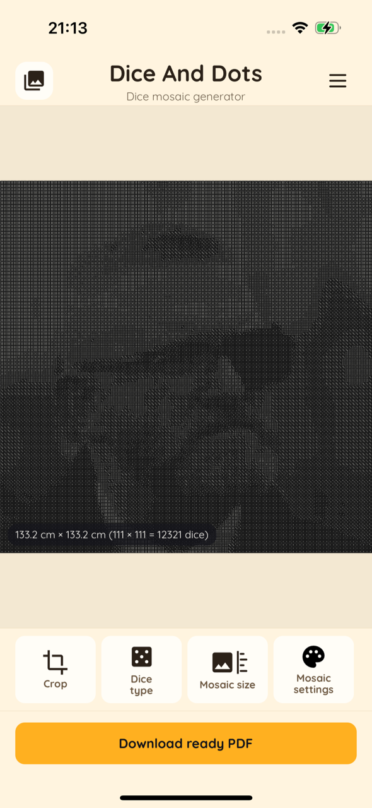
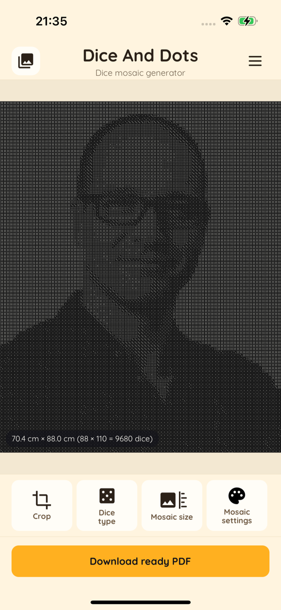
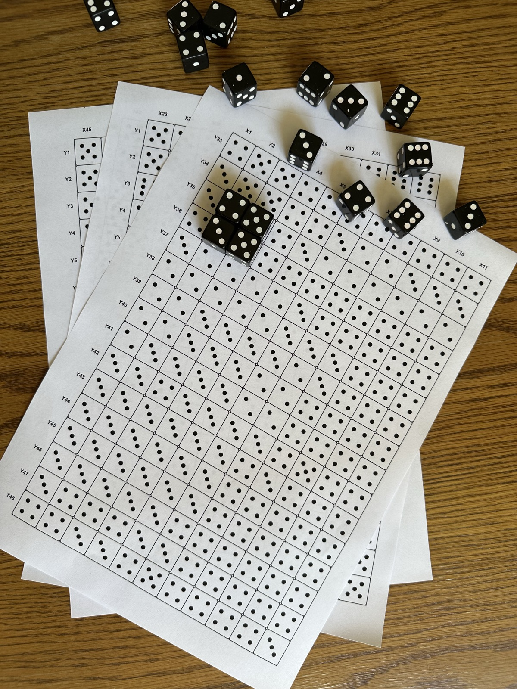
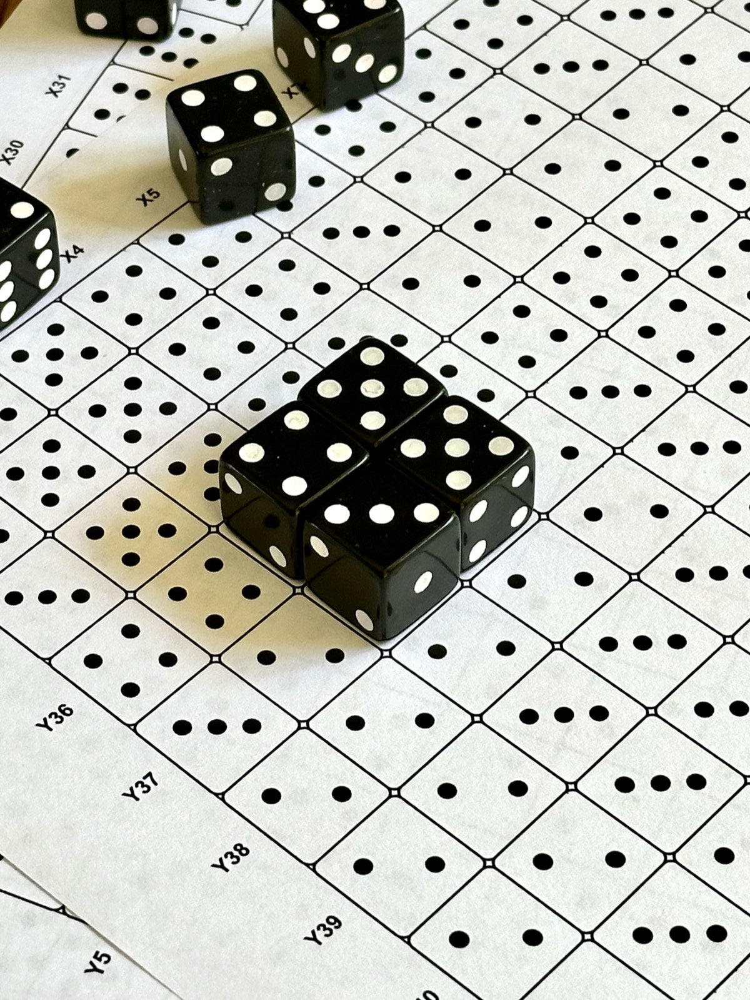
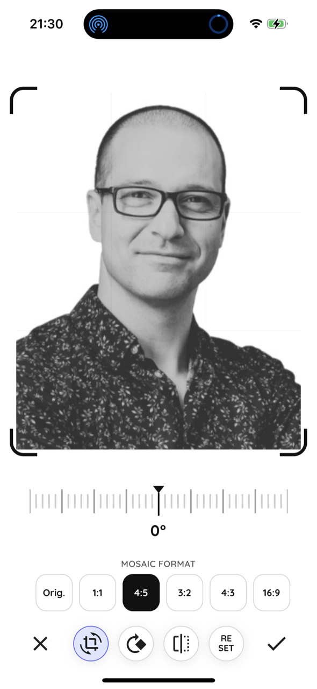
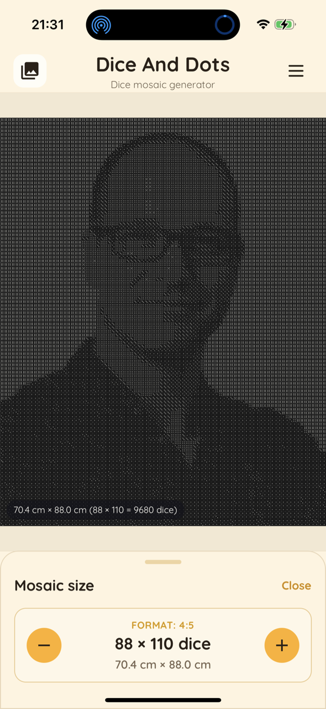
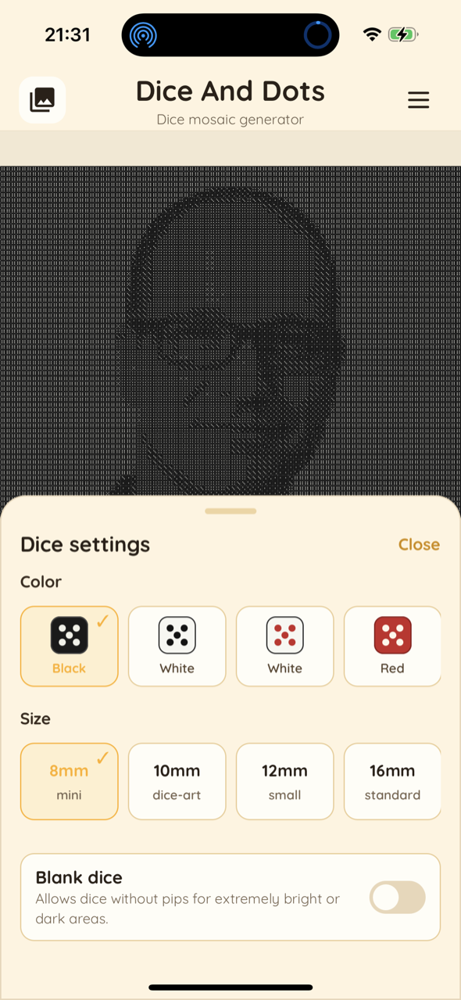
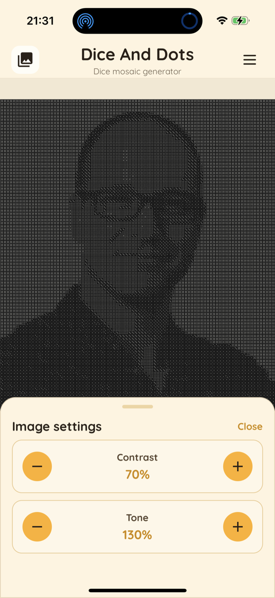

Trasforma le tue foto in veri mosaici di dadi
Kostka Pixel trasforma qualsiasi foto in un progetto pronto da stampare fatto di facce di dadi. Stampa l'istruzione, posiziona dadi veri sulle caselle corrispondenti e crea la tua arte coi dadi, in scala reale 1:1.


Niente account · Niente pubblicità · Tutto funziona sul tuo dispositivo


Dalla foto al mosaico in quattro passaggi
Tutto avviene sul tuo telefono — senza internet, senza caricamenti.
Scegli una foto
Scegli un'immagine dalla galleria, scatta una nuova foto o importa un file. Ritaglia e ruota per inquadrarla perfettamente.
Imposta le dimensioni
Scegli la dimensione dei dadi (da 8 mm mini a jumbo) e le dimensioni del mosaico. L'app mostra la dimensione reale e il numero totale di dadi.
Regola l'aspetto
Scegli il colore dei dadi, regola contrasto e tonalità, attiva i dadi vuoti per le aree chiare o scure e guarda l'anteprima in tempo reale.
Stampa e costruisci
Esporta un PDF pronto da stampare in scala 1:1, stampalo e posiziona i dadi veri su ogni casella seguendo la griglia.
Un'istruzione stampabile che basta seguire
L'app ti dà un piano chiaro e numerato — così chiunque può costruire il mosaico, senza indovinare.

Una griglia in cui ogni casella = un dado
Ogni cella del foglio stampato indica quanti punti deve mostrare un dado (1–6). Basta posizionare un dado vero con lo stesso numero su quella casella.
- I punti stampati in ogni cella indicano la faccia esatta del dado
- Le coordinate X / Y ai bordi ti evitano di perdere il segno
- I mosaici grandi vengono suddivisi su più fogli in formato A

Stampato in scala reale 1:1
Il PDF corrisponde alla dimensione reale dei tuoi dadi, così la griglia stampata si allinea perfettamente ai pezzi fisici. Unisci le pagine e inizia a posizionare i dadi.
- Inserisci i dadi nella griglia riga per riga
- Funziona con i comuni dadi a punti acquistabili all'ingrosso
- Incolla il mosaico finito su un pannello per appenderlo al muro
La tua foto, trasformata in arte coi dadi
Scopri cosa è possibile — ogni immagine qui sotto è partita da una foto qualsiasi.


Tutto ciò che serve per creare arte coi dadi
Opzioni potenti, tutto sul dispositivo e in privato.
Più sorgenti d'immagine
Usa la galleria foto, la fotocamera o file importati come immagine di origine.
Anteprima del mosaico in tempo reale
Il rendering in tempo reale mostra esattamente come apparirà il mosaico prima di stampare.
Dimensione dei dadi regolabile
Da dadi mini da 8 mm a jumbo — scegli la scala adatta al tuo progetto.
Tanti colori di dadi
Nero, bianco, rosso e altre combinazioni di colore per l'aspetto che vuoi.
Formati carta predefiniti
A4, A3, A2, A1, A0, serie B e dimensioni del mosaico personalizzate.
Controllo di contrasto e tonalità
Perfeziona l'immagine e aggiungi dadi vuoti per le aree molto chiare o scure.
PDF pronto da stampare
Genera un PDF con coordinate della griglia ed etichette degli assi, pronto da stampare.
10 lingue
PL, EN, ES, FR, DE, IT, PT, RU, NL e SV integrate.
100% privato
Niente account, niente server, niente tracciamento. Le tue foto non lasciano mai il dispositivo.
Progettata per essere semplice




Un acquisto — l’app completa
Acquista Kostka Pixel una volta sull’App Store. Tutte le funzioni sono incluse, senza acquisti in-app o abbonamenti.
App a pagamento
- Esportazioni PDF illimitate pronte da stampare
- Tutti i colori, le misure e le funzioni
- Nessun acquisto in-app o abbonamento
Il prezzo attuale è mostrato sull’App Store nella tua valuta.
Domande frequenti
Come funziona Kostka Pixel?
Scegli una foto, imposti la dimensione dei dadi e le dimensioni del mosaico, e l'app trasforma l'immagine in una griglia di facce di dadi. Poi esporti un PDF pronto da stampare e costruisci il mosaico con dadi veri.
Cosa stampo esattamente?
Stampi un foglio di istruzioni: una griglia in cui ogni casella mostra quanti punti deve avere un dado, con coordinate X/Y per sapere sempre dove sei. Posiziona un dado corrispondente su ogni casella.
Di quali dadi ho bisogno?
Dadi a punti standard (quelli con i puntini, 1–6). Puoi scegliere la dimensione nell'app — da dadi mini da 8 mm a più grandi — e comprarli all'ingrosso.
È davvero stampato in scala 1:1?
Sì. Il PDF è generato in scala reale, così la griglia stampata corrisponde alla dimensione fisica dei tuoi dadi. Assicurati solo che la stampante stampi al 100% (senza ridimensionamento).
Raccogliete le mie foto o i miei dati?
No. Tutta l'elaborazione delle immagini avviene localmente sul tuo dispositivo. Non ci sono account, server, analisi né tracciamento.
Quanto costa?
Kostka Pixel è un’app a pagamento acquistata una volta sull’App Store. Include tutte le funzioni ed esportazioni PDF illimitate. Nessun acquisto in-app, pubblicità o abbonamento.
Pronto a costruire il tuo primo mosaico di dadi?
Scarica Kostka Pixel e trasforma una foto preferita in un'opera d'arte fatta di dadi.